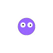

this website was created to romote the youtube channel of by the youtuber creator named ppzlllyswtty. He is a youtuber in 2026 trying to promote his video channel, which are black screen videos. It helps users focus, relax, or get various tasks done. The main goal is to make it easy for user to find this channel to help them to study, work, complete tasks, or just enjoy some quiet and comfortable time. On this site, visitors can find information about the channel and freely access its content.
This website was created to promote the ppzlllyswtty's black screen video channel and raise awareness of its content. The videos are designed by ppzlllyswtty to help teenagers with poor attention span to focus. However, it is also suitable for anyone who either wants to relax, or to attempt to focus. Watching the black screen videos aims to realx your brain and trains focusing for period of time without external stimulation.
primary target audeince were teenagers with poor attention span. This website was designed to help them focus.
Students who wishes to practice focus ability, or increase concentration before exams.
watching calm black screen videos can help people to relax.
bored and wants to try how long can you stare at a black screen for? Sure....

Hello! I'm the creator of this website. I designed it so users can easily find black screen videos that promote concentration and reduce distractions. My goal is to create a simple, professional, and user-friendly website where visitors can quickly find the content they're looking for.
My client is my brother. He created black screen videos for YouTube to help young people improve their concentration while studying, working, or in everyday life. He's been producing this content since 2026 and wanted a website that would professionally showcase his videos and make them displayea to promote to find and play.
